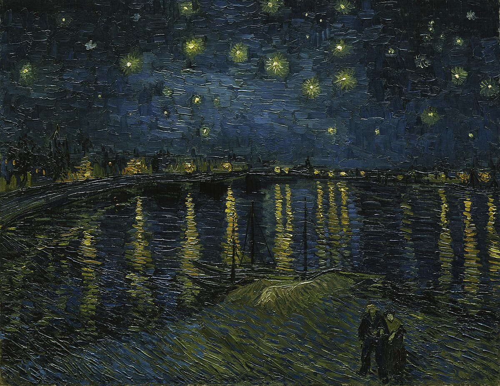

A breathtaking prelude to The Starry Night, this post-impressionist painting captures the serene reflection of the stars and city lights on the Rhône River in Arles. Van Gogh masterfully blends darkness and light, evoking both peace and longing. Try describing the calm water and the shimmering sky, and reflect on the emotions it stirs in you. And, enjoy the picturesque Rhône, a vital river in Arles, France.
Characteristics: Gentle, fluid brushstrokes
Rich blues and golden tones
Contrast between nature and human presence, Simpler to Describe, Strong Colors
Skills Improved: Reading, Writing, Cultural Awareness
Check out these resources as well, for more on La Nuit Étoilée sur le Rhône!: